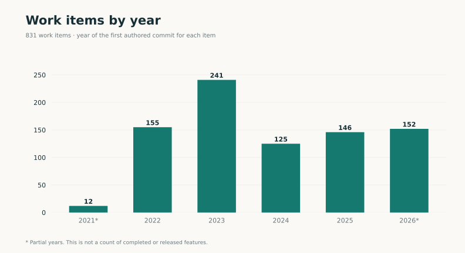
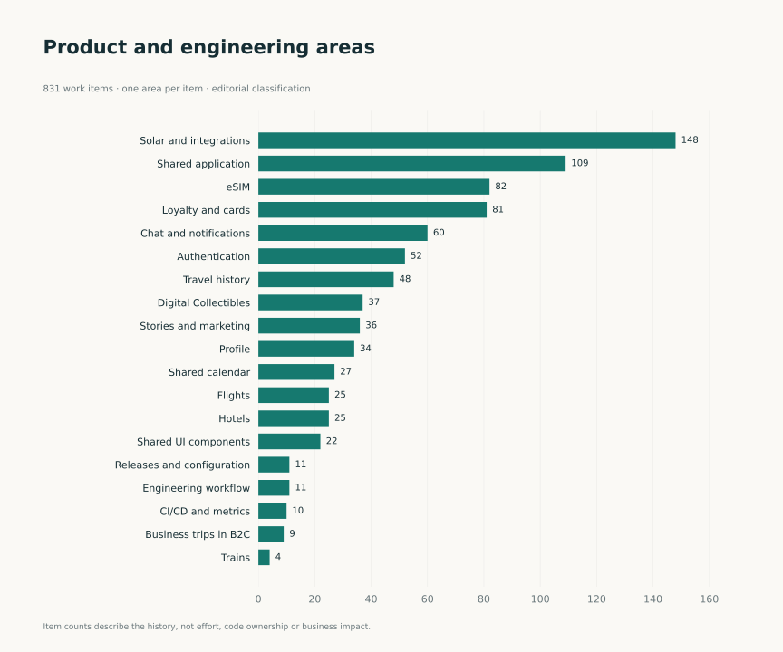
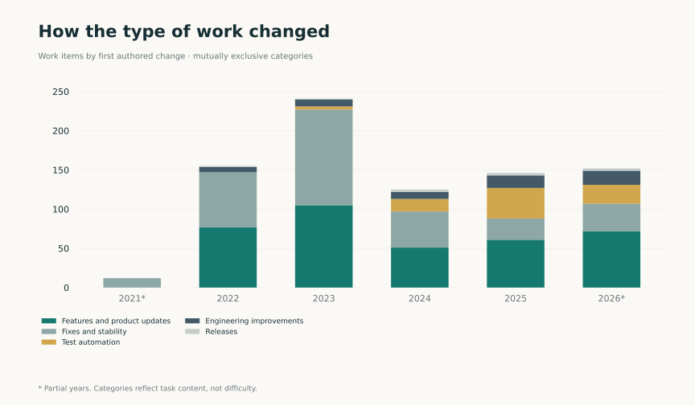
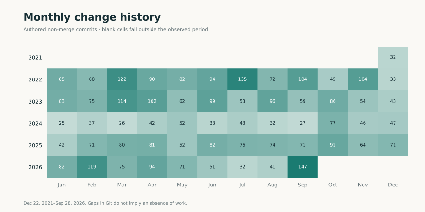
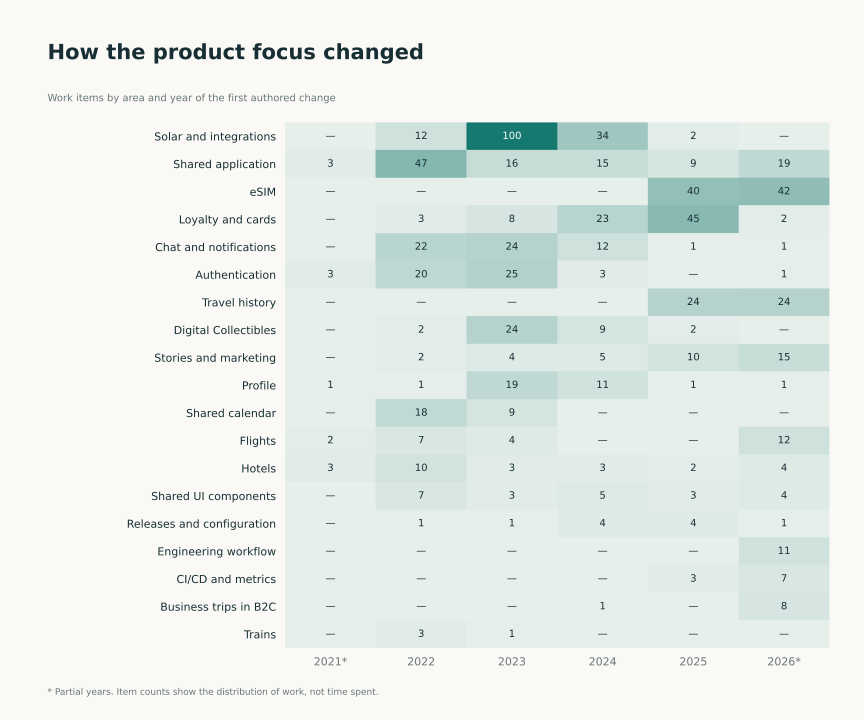

Contribution statistics
Period: December 22, 2021–September 28, 2026. Charts describe the scale and structure of the engineering history. Cases explain the work and decisions.
Code changes by year
4,046 authored non-merge commits. Different records can represent backports of the same change.


Work items by year
831 work items linked to authored code changes. The year represents the first change, not completion.



Areas of work
Each item belongs to one area; the classification was prepared for this portfolio.



Types of work
Features, fixes, checks, engineering changes and releases. Item counts do not reflect effort.



Monthly history
December 2021 and September 2026 are partial. No commits does not mean no work.



Work involving tests
788 commits touch test paths. This is not code coverage or a count of tests written.


How product focus changed
Work items by area and year of the first authored change. Each cell shows an item count.



Data table
| Year | Non-merge commits | Items first changed that year | Commits touching test paths |
|---|---|---|---|
| 2021* | 32 | 12 | 0 |
| 2022 | 1034 | 155 | 12 |
| 2023 | 926 | 241 | 50 |
| 2024 | 487 | 125 | 119 |
| 2025 | 855 | 146 | 303 |
| 2026* | 712 | 152 | 304 |
*Partial years. How to read the metrics · Aggregate data.